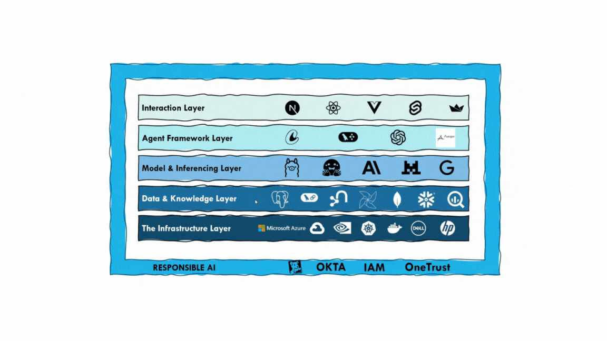

Our AI Platform
IAMAI’s AI Platform is structured across five key layers designed for modularity, scalability, and performance.
- Interaction Layer: Tools like Next.js, React, and Vercel enable rich user-facing experiences.
- Agent Framework Layer: Core frameworks such as LangChain and OpenAI’s functions power autonomous agent behaviors.
- Model & Inferencing Layer: Includes custom LLMs and APIs for scalable, high-performance language tasks.
- Data & Knowledge Layer: Integrates structured and unstructured sources like PostgreSQL, vector DBs, and Snowflake for grounded responses.
- Infrastructure Layer: Azure, Kubernetes, and cloud-native tools ensure deployment agility and GPU acceleration.
Built with enterprise readiness in mind, the platform embeds Responsible AI, IAM, and Data Governance across all layers.